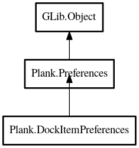

DockItemPreferences
Object Hierarchy:

Description:
public class DockItemPreferences :
Preferences
Contains preference keys for a dock item.
Content:
Properties:
Creation methods:
Methods:
- public override void reset_properties ()
Resets all properties to their default values. Called from construct
and before loading from the backing file.
- protected override void verify (string prop)
This method will verify the value of a property. If the value is
wrong, this method should replace it with a sanitized value.
Inherited Members:
All known members inherited from class Plank.Preferences
All known members inherited from class GLib.Object
- @new
- new_valist
- newv
- add_toggle_ref
- add_weak_pointer
- bind_property
- connect
- constructed
- disconnect
- dispose
- dup_data
- dup_qdata
- freeze_notify
- @get
- get_class
- get_data
- get_property
- get_qdata
- get_type
- notify_property
- @ref
- ref_sink
- replace_data
- replace_qdata
- remove_toggle_ref
- remove_weak_pointer
- @set
- set_data
- set_data_full
- set_property
- set_qdata
- set_qdata_full
- steal_data
- steal_qdata
- thaw_notify
- unref
- watch_closure
- weak_ref
- weak_unref
- notify
- ref_count